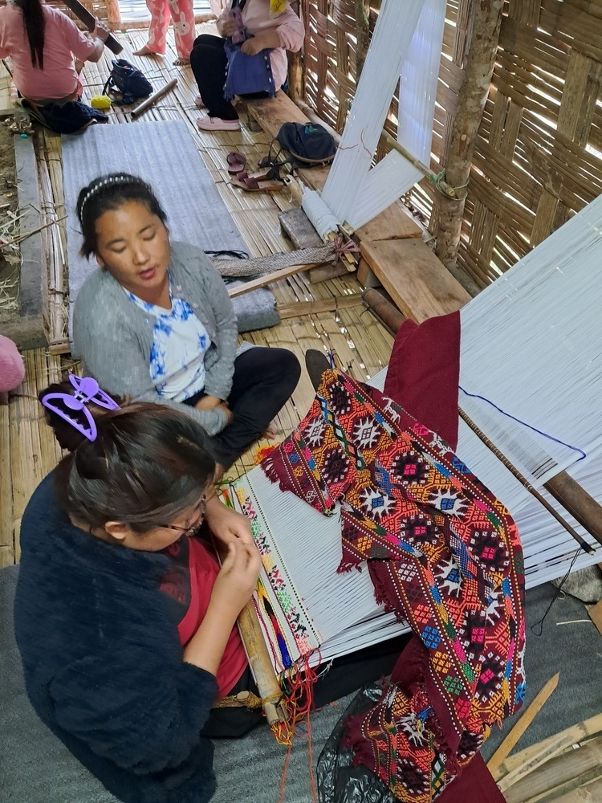
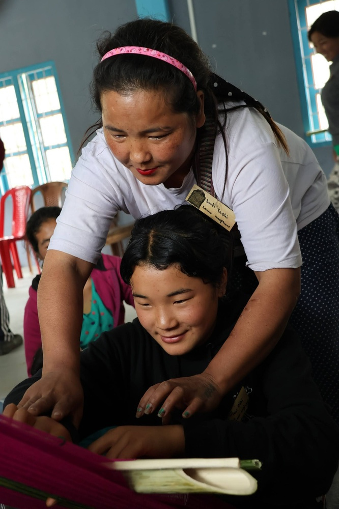
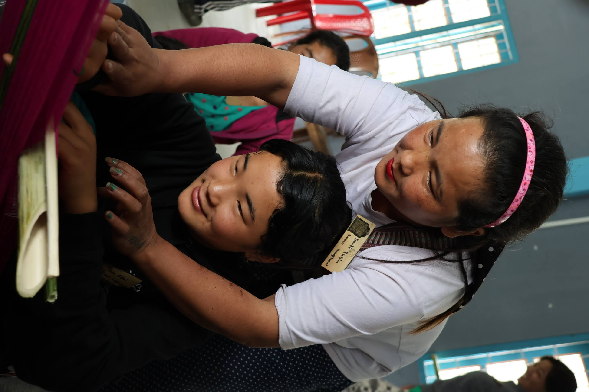
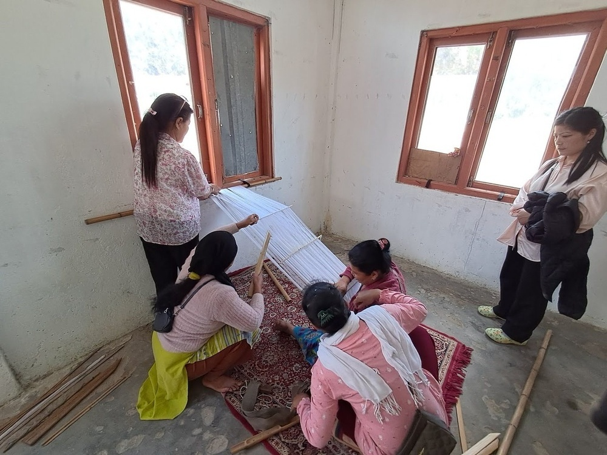

Revive
Reviving a fading practice is actually reviving relationships and linkages. With one own skills, with a community held repository of knowledge of techniques and materials. It is also a revival of the value of memory keepers and makers as the source of information.
Workshops were conducted and follow up incentives were given.
Our Guiding Principles
- 1. Revive value of local teachers
- 2. Stay with known techniques, tools and motifs
- 3. Let the community set the pace



